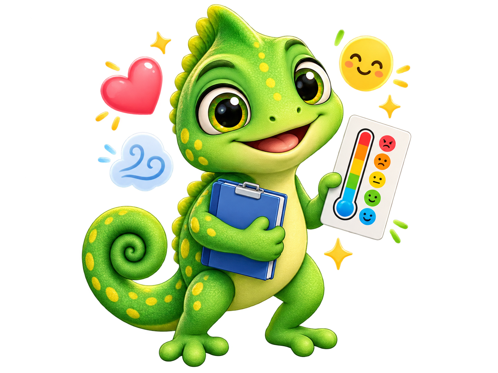
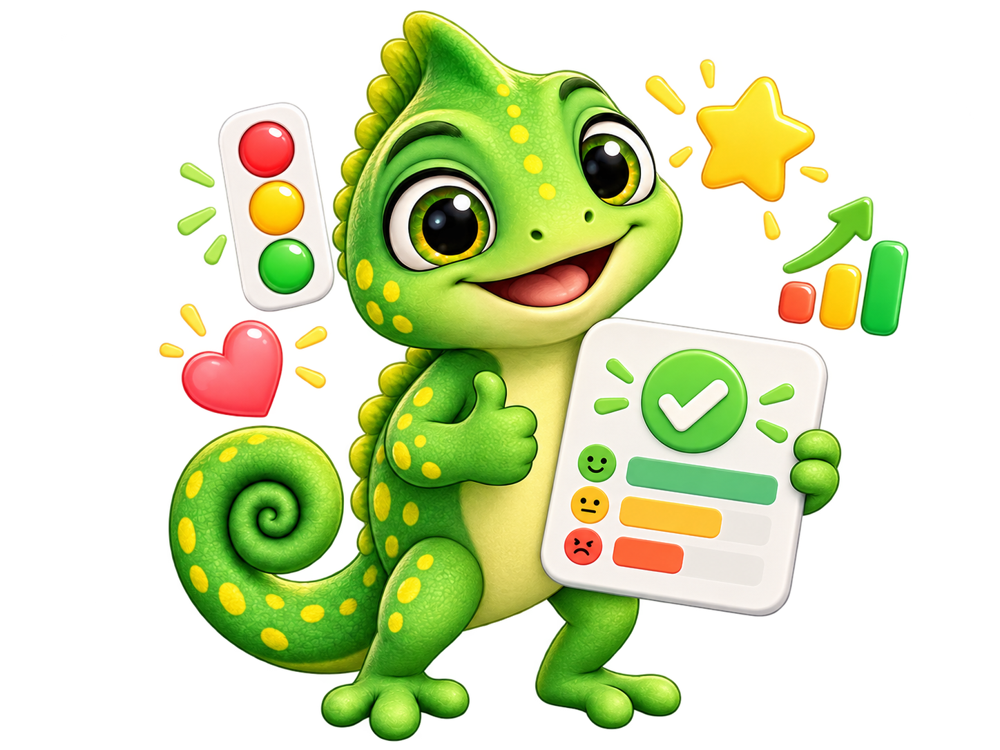

Autoevaluación emocional
Marca la opción que más se parezca a tu manera habitual de actuar.
Una autoevaluación bonita, clara y sincera para descubrir cómo reconoces, expresas y manejas tus emociones.

Este test es educativo y orientativo. No realiza diagnósticos psicológicos.
ANTES DE COMENZAR
Encontrarás 25 afirmaciones divididas en cinco áreas. Marca la opción que mejor describa cómo actúas la mayoría de las veces.
Lee con calma cada afirmación.
Responde según tu forma habitual de actuar.
Al final verás un semáforo y tus áreas más fuertes.
“Tus emociones no son enemigas. Son señales que puedes aprender a entender.”
Marca la opción que más se parezca a tu manera habitual de actuar.
MI RESULTADO
Este resultado describe tendencias de tus respuestas; no define quién eres ni es un diagnóstico.

MIRA MÁS ALLÁ DEL TOTAL
MI PEQUEÑO COMPROMISO